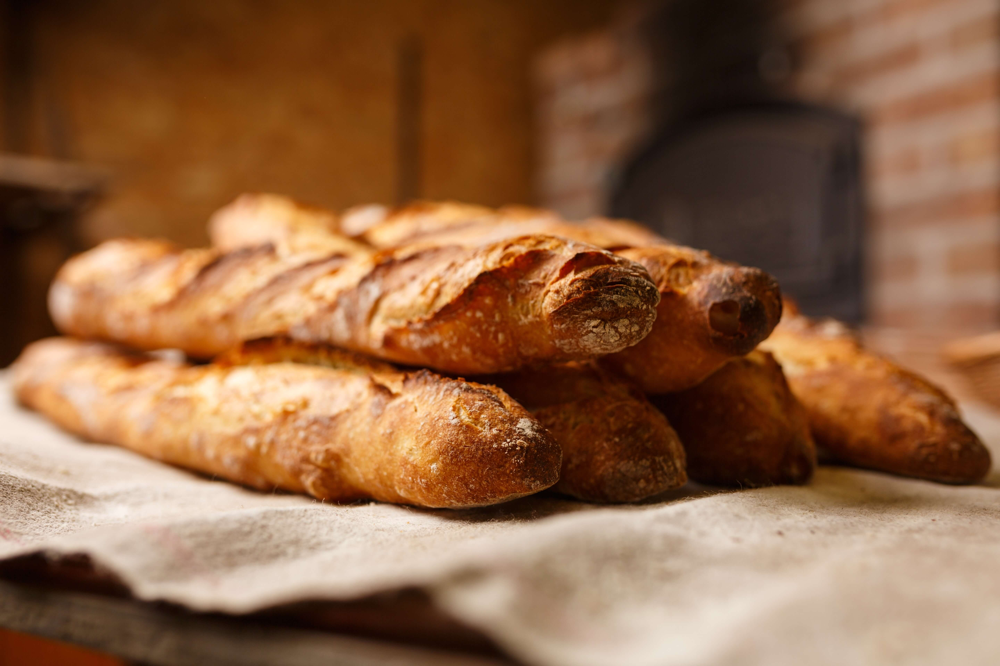

RECETAS
Pan casero


by Ana Maria Zamorano
INGREDIENTES
- 950 g de harina 0000
- 1/3 de sobrecito de levadura seca (3 gramos)
- 700 cc de agua
- 10 g de sal fina
PREPARACION
- Poner la harina en un bowl bien grande para que pueda leudar ahí mismo hasta doblar su volumen. Hacer un hueco y agregar la levadura y la sal.
- Ir agregando el agua a temperatura ambiente mientras se mezcla con una cuchara de madera. Va a quedar bien húmedo. Sólo hay que mezclarlo, no amasar.
- Tapar el bol con papel film y dejarlo 24 horas leudando a temperatura ambiente, esto quiere decir, a unos 20°. Este es el secreto para que salga perfecto, dejarlo leudar mucho tiempo. En ese tiempo va a crecer por lo menos el doble.
- Tapar el bol con papel film y dejarlo 24 horas leudando a temperatura ambiente, esto quiere decir, a unos 20°. Este es el secreto para que salga perfecto, dejarlo leudar mucho tiempo. En ese tiempo va a crecer por lo menos el doble.
- Dejarlo levando de 1 a 2 horas más sobre una placa, y cocinarlo en un horno fuerte (220º) de 30 a 40 minutos. Cuando esté dorado y la base al golpearla suene hueca el pan estará listo.
- Dejar enfriar la pieza sobre una rejilla para que no se concentre la humedad en la base y disfrutar luego de unos minutos